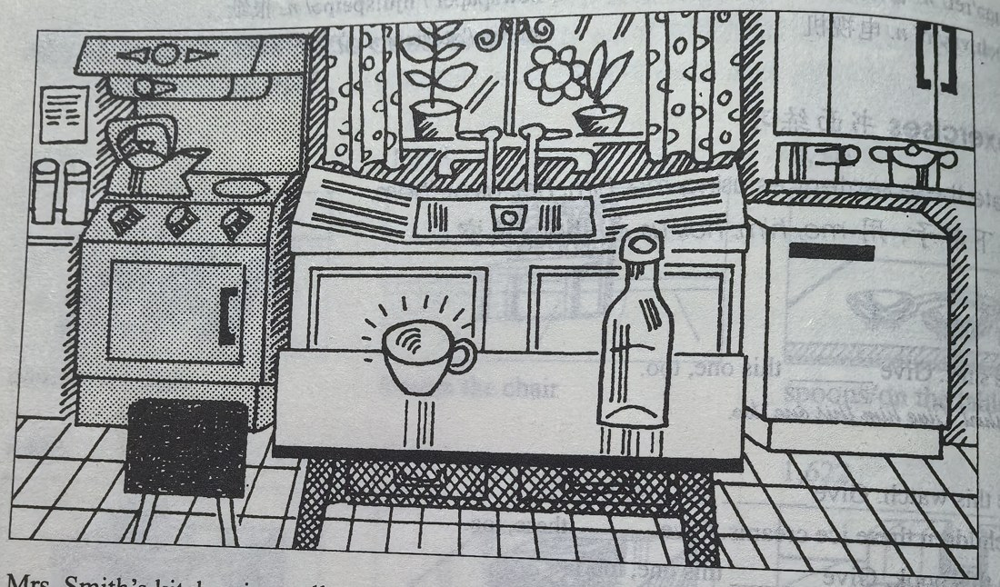

Lesson content · 课文
Lesson 25: Mrs. Smith's kitchen · 史密斯太太的厨房
Listen then answer this question. 听录音，然后回答问题。
What colour is the electric cooker?
电灶是什么颜色的？
Mrs. Smith’s kitchen is small.
There is a refrigerator in the kitchen.
The refrigerator is white.
It is on the right.
There is an electric cooker in the kitchen.
The cooker is blue.
It is on the left.
There is a table in the middle of the room.
There is a bottle on the table.
The bottle is empty.
There is a cup on the table, too.
The cup is clean.

New words and expressions · 生词和短语
| Word · 单词 | Pronunciation · 音标 | Meaning · 词义 |
|---|---|---|
| Mrs. | /ˈmɪsɪz/ | 夫人 |
| kitchen | /ˈkɪtʃɪn/ | n. 厨房 |
| refrigerator | /rɪˈfrɪdʒəreɪtə/ | n. 电冰箱 |
| right | /raɪt/ | n. 右边 |
| electric | /ɪˈlektrɪk/ | adj. 带电的，可通电的 |
| left | /left/ | n. 左边 |
| cooker | /ˈkʊkə/ | n. 炉子，炊具 |
| middle | /ˈmɪdl/ | n. 中间 |
| of | /ɒv/ | prep. （属于）……的 |
| room | /ruːm/ | n. 房间 |
| cup | /kʌp/ | n. 杯子 |
Notes on the text · 课文注释
- There is 的结构用来说明人或物的存在，在汉语中可以译为“有”。这个结构必须跟单数名词，句中往往要有一个介词短语来表示位置或地点。
- on the right (left)，在右边（左边），是介词短语，在本句中作表语。
- 注意不要把 cooker 和 cook 混淆，cooker 是“炉灶”，不是“厨师”。“厨师”在英语中是 cook。
- in the middle of，在……中间。
- 在课文的第2行和第3行的名词 refrigerator 前面用了两种不同的冠词：a（不定冠词）和 the（定冠词）。在第2行，“冰箱”是第一次提到，是指冰箱这类电器中的一个，因此要用不定冠词 a。当第二次提到冰箱时，就不是泛指任何一个冰箱，而是特指第2行中的那个冰箱了，因此要用定冠词 the。
Chinese translation · 参考译文
史密斯太太的厨房很小。
厨房里有个电冰箱。
冰箱是白色的。
它位于房间右侧。
厨房里有个电灶。
电灶是蓝色的。
它位于房间左侧。
房间的中央有张桌子。
桌子上有个瓶子。
瓶子是空的。
桌子上还有一只杯子。
杯子很干净。
Practice · 课文练习
Understand the lesson · 课文理解
Comprehension · 理解题
Answer the question about the lesson text. 根据课文回答问题。
-
comprehension: Comprehension · 理解题 — What colour is the electric cooker?
Practice worksheet · 配套练习
A. Dialogue
Read this dialogue. Fill in the missing words. 填空。
-
worksheet: A. Dialogue — Mrs. Jackson: My new kitchen is very big.
Mrs. Smith: Oh, my ____ is small, but it’s very nice.
Mrs. Jackson: Is ____ an electric cooker ____ your kitchen?
Mrs. Smith: Yes, ____ is. It’s blue and it’s new. My ____ is new, too.
Mrs. Jackson: The table ____ my kitchen is very big.
Mrs. Smith: Oh, my table isn’t very ____, but it’s very nice. And ____ kitchen is clean. It’s very clean!
B. Answering these questions
Look at the picture on page 49 of the Students’ Book and answer these questions. 参照学生用书第49页上的图回答以下问题。（插图见本页课文。）
Example · 例句
Is Mrs. Smith’s kitchen large? — No, it isn’t. Her kitchen is small.
-
worksheet: B. Answering these questions — Is there a refrigerator in the kitchen?
-
worksheet: B. Answering these questions — What colour is the refrigerator?
-
worksheet: B. Answering these questions — What colour is the electric cooker?
-
worksheet: B. Answering these questions — Where is it?
-
worksheet: B. Answering these questions — Where is the table?
-
worksheet: B. Answering these questions — Where is the bottle?
-
worksheet: B. Answering these questions — Is it empty or full?
C. Numbers
Write these numbers in figures. 用阿拉伯数字表示以下数词。
-
worksheet: C. Numbers — three thousand, five hundred and ten
-
worksheet: C. Numbers — five thousand
-
worksheet: C. Numbers — six thousand, four hundred and eighteen
-
worksheet: C. Numbers — seven thousand
-
worksheet: C. Numbers — eight thousand, seven hundred and fifty
-
worksheet: C. Numbers — nine thousand
Grammar practice · 语法练习
I. Fill in the blanks with a, an, or the
- There is ___ new table in our kitchen. It's in ___ middle of ___ kitchen.
- There is ___ watch in ___ cupboard in your room.
- These glasses are big. ___ ones on ___ table are dirty; ___ ones in ___ cupboard are clean.
- Give me ___ knife, please.
Which one? ___ sharp one, not ___ blunt one!
- Is there ___ pen on my desk?
Yes, there's ___ pen and there's ___ pencil. ___ pencil is a red one.
- There is ___ refrigerator in Mrs. Smith's kitchen. ___ refrigerator is ___ white one.
- What's ___ matter, John?
I'm hot. Give me ___ ice cream, please.
- Who is that man?
He's ___ American tourist.
- Here are two coats, ___ black one and ___ blue one. Which one is your coat? ___ black one or ___ blue one?
My coat is ___ blue one.
- Come and meet Molly. She's ___ keyboard operator.
II. Fill in the blanks with in or on
- There is a picture ___ the wall.
- There is water ___ the bottle.
- There is a small table ___ the room.
- My pens are ___ the desk.
- There's a big box ___ the floor.
- The tickets are ___ her handbag.
- Where are my shoes?
They're ___ the cupboard.
- Jane's small bottles are ___ her dressing table.
- Look at the new carpet ___ my room!
- Is there a cooker ___ her new kitchen?
Yes, there is.
- The table is ___ the middle of the room, and the cups and plates are ___ the table.
- There's the new cooker. And the new refrigerator is ___ the right.
III. Answer the questions using the cues according to the example
Example: Is there a spoon in the cup? (on the plate/dirty) -> No, there isn't a spoon in the cup. There is one on the plate. It's dirty.
- Is there a spoon in the cup? (on the plate/dirty)
No, there isn't a spoon in the cup. There is one on the plate. It's dirty.
- Is there a tin on the table? (in the refrigerator/big)
- Is there a bottle on the cupboard? (in the cupboard/full)
- Is there a table in the middle of the room? (in the kitchen/brown)
- Is there a knife on the plate? (on the shelf/blunt)
- Is there an umbrella on the floor? (on the chair/red)
- Is there a tie on the bed? (on the dressing table/orange)
- Is there an electric cooker on the right of the cupboard? (on the left of the cupboard/new)
- Is there a magazine on the desk? (on the bed/new)
- Is there a window on the left of the door? (on the right of the door/open)
- Is there a knife on the plate? (on the tin/green)
- Is there a box on the shelf? (on the refrigerator/empty)
Your notes and answers
Use this space for longer responses or exercises that do not have an individual answer box.